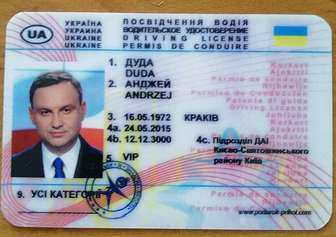
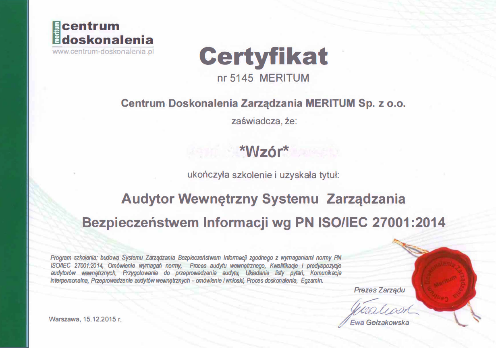
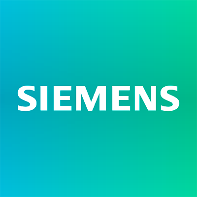
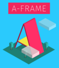
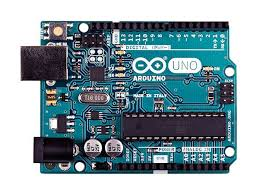

Poniżej znajduję się parę informacji o mnie.
Z racji młodego wieku, oraz niezbyt dużego doświadczenia zawodowego.
Moje dokonania nie są tak wybitne jakbym tego oczekiwał, lecz już coś w życiu osiągnałem :)
Pierwszym chyba najważniejszym osiągnięciem było zdanie Prawa jazdy.

Ukończyłem technikum elektryczne jako Technik Elektryk oraz zdałem mature co pozwoliło rozpocząć studia

Ukończyłem Automatyke i RobotykęAutomatyke i Robotykę
na UMK w Toruniu, przed rozpoczęciem pandemi Covida.
Prace inżynierską poświęciłem sterowaniu stanowiskami z wykorzystaniem sterowników z rodziny S7 Siemensa oraz połączenie MQTT lub za pomocą Ethernetu

Zaczałem drugi stopień na Politechnice Poznańskiej, również na AiR. I poznałem super ludzi.
Podczas zajęć po raz pierwszy używałem takich narzędzi jak :
*A-Frame : Gdzie Animacje możesz znajeść na stronie Animacja

ISE Design Suite - które wykorzystywane było do FPGA

I zakupiłem róweniż płtykę Arduino na zajęcia z programowania mikrokontrolerów
